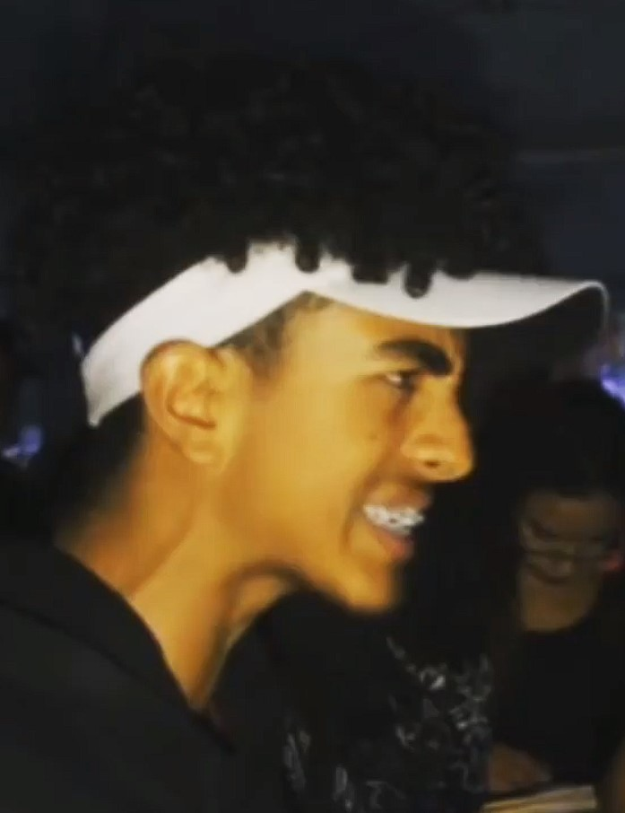
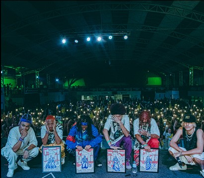

Início

Barreto começou sua carreira no universo das batalhas muito novo. Desde sempre
entregando sua alma e toda a sua força de vontade em cada verso, sua
dedicação foi o pilar principal
para que ele pudesse chegar onde chegou hoje.
No início o "Jovem Barro" ainda não fazia parte do bando,
mas por ser quem é passou a se enturmar no grupo e fazer parte das Tartarugas de GR. Inclusive,
no podmestre o Doprê relata que na primeira vez que rimou contra Barreto
viu nele uma entrega única.
Desenvolvimento

Mantendo sempre sua dedicação, Barreto foi ganhando espaço na cena das batalhas.
Entregando alma, flow, conteúdo
e punches únicas, ele passou a deixar seu nome marcado no mundo do freestyle.
Lançando alguns sons, seguindo gradualmente com seu crescimento nas batalhas, Barreto foi
crescendo até que chegasse onde está hoje. Contudo, isso não ocorreu de uma hora para outra, foi necessário
muita dedicação da parte do nosso Michelangelo para que ele pudesse
finalmente alcançar o topo .
Espalhando o Amor

Nos anos de 2022 e 2023, Barreto passou a se tornar um colosso da Internet ,
com rimas marcantes que rodaram todas as redes sociais e passaram pelas telas em constante loop.
Dentre os grandes destaques do Barreto, temos muitas rimas onde o ataque feito por ele engrandecia
o seu oponente ou onde ele fazia prevalecer sensações positivas sobre a negatividade, além de participações
memoráveis na BDA 6 Anos, BDA 7 Anos, MDM Armagedom e BDE Midnight Tune.
Barreto ficou muito marcado por espalhar o amor por onde ele passa. Juntamente com Guri,
ele mostra um tipo de freestyle diferenciado e uma amizade inpiradora para todos os
integrantes do RAP.
Futuro

Em relação ao futuro, a maior certeza é a de que Barreto foi e será brilhante por onde quer que passe.
Com suas danças, rimas, graças e essência, o Jovem Barro inspira muitas pessoas ao redor do Brasil, renovando
dentro de cada um uma vontade de ser quem realmente é independente da situação, o que mostra
o que realmente é carregar um espírito CAWABANGA .